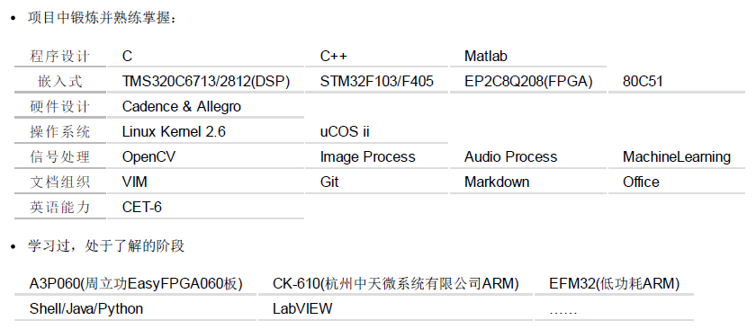

学习经历
2013级硕士 北京科技大学，计算机技术专业（保送）
2009级本科 北京科技大学，电子信息工程专业
2006级高中 江西省吉安市第一中学，宏志班
专长技能
从大二(2010年)至今(2014年)，4年嵌入式经验，2年图像及音频信号处理经验。
本人熟悉多种嵌入式平台，ARM系列包括STM32F103和STM32F405、DSP包括TMS320C6713、FPGA包括EP2C8系列，这些平台都有过相关项目或比赛经验。除此之外，掌握uCOS_ii、DSP/BIOS操作系统。现专注于数字信号处理及其相关算法的嵌入式实现，因为喜爱开源，熟练应用Linux环境，平常Windows下编程都习惯性使用Cygwin和VIM。
我的座右铭是“千淘万漉虽辛苦，吹尽狂沙始到金”。

参与项目及荣誉
2013.09 DSP+FPGA声采集定位及识别系统，组长
2013.06 支持向量机结合条件随机场算法的图像目标识别，独立完成
2012.10 校级“三好学生”
2012.10 “美新杯”物联网创新创业大赛北京市三等奖，队员
2012.05 “2012全国电脑鼠走迷宫大赛”全国一等奖(第3名)，主车手
2012.04 北京科技大学摇篮杯(挑战杯预选赛)三等奖，队长
2011.11 北京科技大学智能车校内赛二等奖（光电组第3名），队员
2011.10 2010-2011学年人民奖学金三等
2010.10 2009-2010学年人民奖学金四等
2009.11 《北科大青年》第一届征文大赛三等奖
实习/实践经历
2012.08-2012.10 亿阳通讯实习，负责sbc子带音频编码算法
2012.08-2012.10 中国航天科工集团2院25所，电子元器件管理后勤
2010.07-2012.05 北京科技大学图书馆，助管
2010.02-2011.05 《北科大青年》杂志，撰稿人
联系邮箱（欢迎学习交流）
xiahouzuoxin@163.com
g20138503@xs.ustb.edu.cn